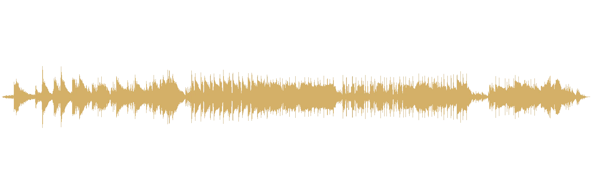
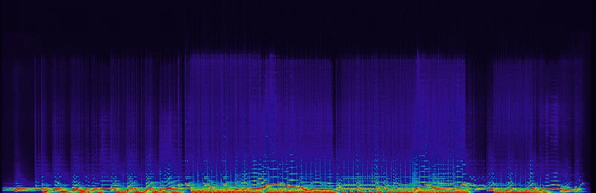
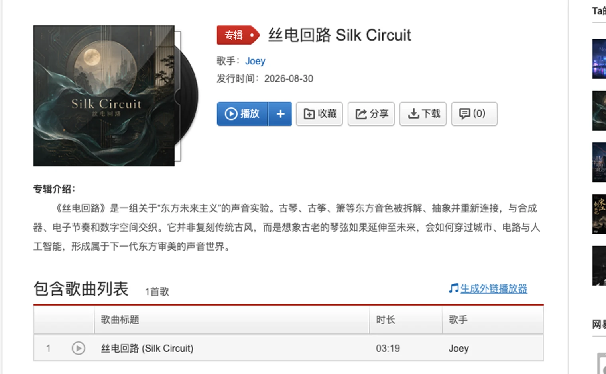

The final Neon Dream WAV landed in my Downloads folder at 8:35 p.m. Forty-five minutes later, SILK CIRCUIT.wav followed. The second file was 199.64 seconds long at 48kHz stereo. NetEase Cloud Music displays it as 3 minutes 19 seconds.
The exports are close in time and far apart in sound. Neon Dream asks how a future city might hold solitude. Silk Circuit starts with a narrower question. What happens when an Eastern string enters a circuit?
Eastern futurism needs both ends to hold. Listeners should recognize where the sound came from and hear that it has travelled somewhere else.
Setting the word guofeng aside
Guofeng is a huge category. It can describe instruments, melodies, lyrics, clothes, and a complete visual world. Hand that word directly to a generative tool and the result can quickly resemble a historical-drama title sequence. That path has an audience. I wanted another one.
I kept guqin, guzheng, and xiao because their timbres have a recognizable source. Inside the track, they are separated, abstracted, and reconnected. Synths build the unfamiliar space. Electronic rhythm moves time forward. Digital textures leave a manufactured trace. The old string remains while the buildings around it change.
The album description calls this Eastern futurism. I kept the phrase because it describes a relationship. The traditional timbres are active material rather than display pieces. The future is built from actual sound choices instead of a few temporary cyber effects.
The waveform gives the circuit an action

Silk Circuit runs about forty seconds longer than Neon Dream and its sections are easier to see. The opening leaves space. The body builds into sustained energy. A clear dip appears later, as if the circuit disconnects for a moment before current returns.
I like that dip. It gives the word “circuit” a physical action in the track. Connection happens, connection briefly disappears, and what returns does not simply repeat the earlier material. The title touches the structure, so the music gains a skeleton of its own.
The spectrogram replaces a few pretty adjectives
Electronic music is easy to describe with a queue of atmosphere words. Deep, ethereal, futuristic, mysterious. Most of them could sit under almost any track. I would rather look at what this audio actually left behind.

The bottom of the spectrum stays bright, while the middle holds many separated lines. They give the sound a thinness like silk and preserve some of the grain of plucked strings. The spatial texture does not cover everything from above. I can say the track is about connection because the materials still leave room between them.
Joining silk and circuitry on the cover
The selected cover is also 1,254 pixels square. A circular moon gate frames a distant skyline with teal light. Translucent silk crosses the foreground. Gold circuit traces run over the dark walls. Strings descend from the top and pass through the title.
The image is AI-generated and does not depict a real location. I use it as a concept image. At thumbnail size, the moon gate and silk remain legible, and the black, gold, and teal palette stays distinct from the blue and violet Neon Dream cover.
The release steps belong to the work
I uploaded SILK CIRCUIT.wav, then selected the cover in a separate file picker. The lyric field states that it is instrumental. I submitted it as an original AI work and kept the AI source explicit. For genre, mood, and scene metadata, I used electronic, Eastern, and ambient directions that matched the audio.
There was no romantic studio scene in this part. There were dropdowns, two file selections, a publishing confirmation, and a return to the public page. This is how a listener encounters an AI track in the real world. The title, cover, duration, description, and play button arrive together.

What remains after the fast forty-five minutes
The two final WAV timestamps are only forty-five minutes apart. AI made that speed possible. It also makes “another version” cheap. The cheaper it gets, the more finished versions I can accumulate, each one sounding complete enough to keep.
My filter here was simple. Does the work hold one precise question? Do the materials still have distinct roles? Have the cover and description made the claim larger than the audio? Silk Circuit stayed because Eastern timbres and digital space really do meet inside it, with enough separation for both to remain audible.
This resembles the part of design I know best. A tool supplies options. I narrow the problem, build a judgment, and sign the final selection. Music is more subjective than an interface, and no usability test announces the correct version for me. When 3 minutes 19 seconds end, whether I want to press play again is strict enough.
Checks for the next Eastern-futurist track
- Name the traditional timbre that should survive and decide whether its identity comes from tone, gesture, or melody.
- Give the future a concrete material. State what the synth, electronic rhythm, and spatial texture each do.
- Replay the section that sounds most like familiar costume-drama music and tighten it if it pulls the whole track away.
- Use the waveform and spectrum to locate questions, then return to listening for the decision.
- Keep AI provenance and instrumental status visible when the track becomes public.
- Silk Circuit on NetEase Cloud Music for the title, artist, date, duration, and album description.
- The final local file SILK CIRCUIT.wav, 199.64 seconds at 48kHz stereo, generated the waveform and spectrogram above.
- The cover is an AI-generated concept image. The release screenshot comes from the public NetEase page on August 30, 2026.